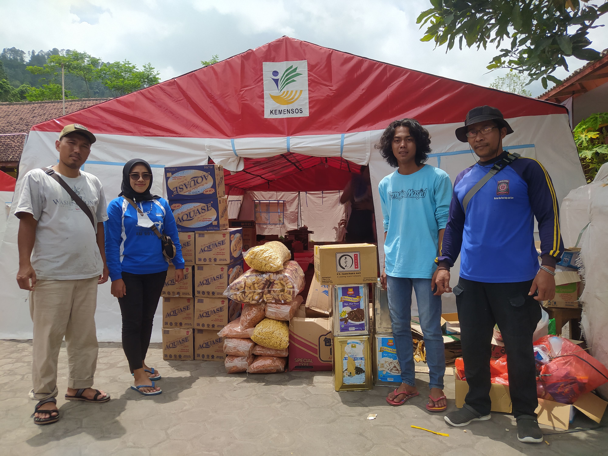
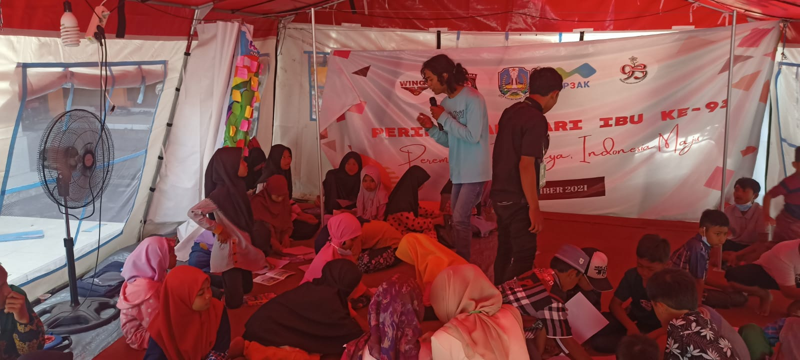
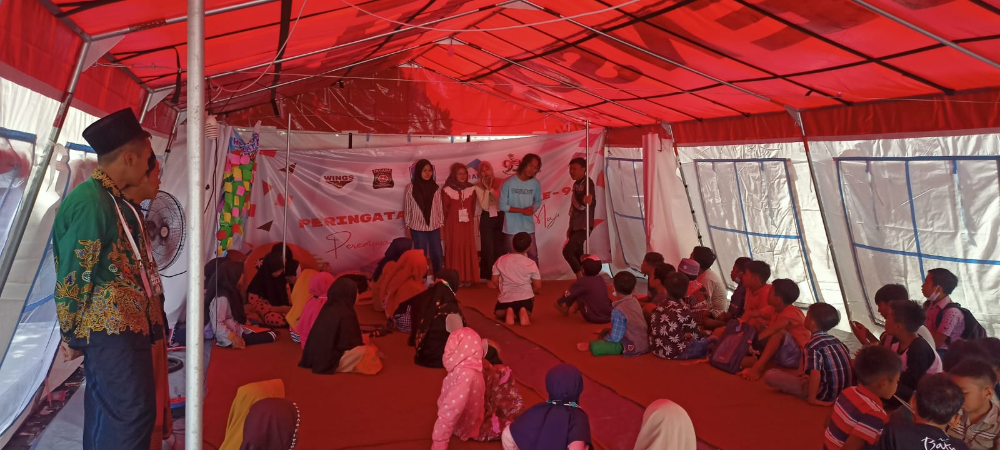

Pendampingan Psikososial Tirtoyudo
Turun langsung ke lapangan Bersama Himpunan Mahasiswa Psikologi dan Badan Eksekutif Mahasiswa Universitas Islam Raden Rahmat Malang, untuk memberikan layanan dukungan psikososial (LDP). Fokus utama adalah memvalidasi rasa trauma, memberikan Psychological First Aid (PFA), dan membangun kembali resiliensi warga terdampak, terutama kelompok rentan seperti anak-anak dan lansia.


Pemberian Bantuan Sosial & Dukungan Layanan Psikologi Semeru
Turun langsung ke lapangan dinaungi oleh Remaja Masjid Riyadlun Nahdiliyin dan Kementrian sosial, untuk memberikan layanan dukungan psikososial (LDP). Fokus utama adalah memvalidasi rasa trauma, memberi dukungan pendidikan untuk anak-anak yang mengungsi pada posko, dan membangun kembali resiliensi warga terdampak. Beserta memberi dukungan bansos kepada posko tanggap bencana Kemensos.



Rapat Koordinasi ILMPI Wilayah V
Menghadiri Rapat Koordinasi Ikatan Lembaga Mahasiswa Psikologi Indonesia. Sebuah momen berharga untuk bertukar pikiran, membangun relasi, dan memperkuat solidaritas antar mahasiswa psikologi se-Indonesia.